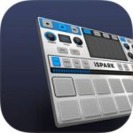
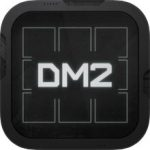
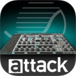
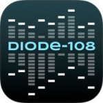
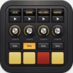
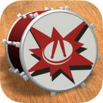

I’ve done a number of iOS music app ‘roundup’ articles on the blog in the past covering different categories of apps such as synths, DAW/sequencers, guitar rig sims and audio effects. While these are perhaps of most interest to the newer iOS musicians (old-hands are likely to be familiar with the more popular apps in each of these categories already), these articles have always attracted lots of readers and generate plenty of ‘… but you missed out the brilliant XYZ….!’ sorts of feedback…. all of which is good fun.
I’ve done a number of iOS music app ‘roundup’ articles on the blog in the past covering different categories of apps such as synths, DAW/sequencers, guitar rig sims and audio effects. While these are perhaps of most interest to the newer iOS musicians (old-hands are likely to be familiar with the more popular apps in each of these categories already), these articles have always attracted lots of readers and generate plenty of ‘… but you missed out the brilliant XYZ….!’ sorts of feedback…. all of which is good fun.
Anyway, one category that I’ve been meaning to add to this ‘round-up’ list is drum and groove machine apps. This is worth doing because (a) it is a category where iOS is blessed with some brilliant content and (b) it is something that most iOS musicians are likely to want to explore whatever type of music they actually produce.
As usual with these round-up articles, I’ll try to divide the apps into some sub-categories based upon their key function even if these sub-categories are, at times, a little arbitrary and over-lapping. However, if I was going to get all comprehensive on you then this could be a long (even for me!) post; the App Store does have a very large number of drum-related apps. I will, therefore, try to be selective here and highlight just those apps that I think are the best in their particular class. I’ve also added links below that point to the original reviews that I did or one of the more recent ‘update’ news items so feel free to follow those if you want to find out more about a specific app….
When it comes to iOS-based music production, mic’ing up a real drum kit isn’t always an option…. Thankfully, there is an app (or three) for that :-)
Of course, this is undoubtedly a personal selection so, if I’ve missed something that is a particular favourite of yours, then do feel free to add a comment at the end and share your love of the app with the rest of the readership. Between us, we might put together a pretty good selection to guide those taking their first steps in the drum and groove machine section of the App Store in order to populate that new iPad…. :-)
‘Real’ acoustic drums
While lots of iOS musicians might spend most of their time working within electronic music styles, almost everyone needs some acoustic drums sounds at one point or another. Drum loops are an obvious option here (and I’ll come to those a bit later) but, if you want something that gets closer to the level of control ‘virtual drummer’ tools such BFD or Superior Drummer provide to desktop musicians, then you need to look beyond the drum loop format.
 DrumPerfect Pro
DrumPerfect Pro
Marinus Molencraft’s original DrumPerfect moved the iOS virtual drummer on to a new level when it was first released and DrumPerfect Pro – launched in January 2016 – simply took that concept, polished and refined it, and made it better still. This really is a very clever piece of software that has taken the concept of a desktop virtual drummer and re-imagined it to work within the confines of current iOS hardware (and, in particular, the storage limitation that means multi-GB sample libraries are a less viable option under iOS).
In some ways, DrumPerfect seems instantly familiar. You can select a kit (or build your own from imported samples), create drum patterns within a step/grid-based editor, chain those patterns together to form a song and take that drum track easily into your DAW/sequencer app for use within a wider musical project. The app offers Audiobus, IAA, MIDI and MIDI Clock sync support… and Ableton Link was added in a more recent update.
DrumPerfect Pro is the best virtual drummer we have for iOS….
However, the app’s clever sample handling means you can get some very realistic performance dynamics via MIDI velocity and, as the pattern tools include some brilliant humanize and performance randomisation options, even a small number of patterns can be taken a considerable distance. Add in the fact that Pro now includes a much-expanded selection of preset patterns than the original (and with more available via inexpensive IAPs), and DrumPerfect Pro is, for my money at least, the best virtual drummer we currently have for iOS.
The only downside is that to fully exploit this potential, there is a bit of a learning curve involved. DrumPerfect Pro pays that time investment back though; this is top-notch music software designed to create very realistic acoustic drum tracks and as close as iOS currently gets to BFD or Superior Drummer. At UK£13.99/US$18.99, it is an absolute bargain.
DrumPerfect Pro
 Luis Martinez’s apps
Luis Martinez’s apps
If you are after acoustic drum parts but want something that delivers more of an instant result (if perhaps without the ultra-realistic details that DrumPerfect Pro provides) then this next selection might be just the ticket. In fact, this isn’t a single app but a series of apps all from the same developer; Luis Martinez.
I’ve reviewed a few of the apps from this series here on the blog; Rock Drum Machine 3, Brazilian Drum Machine and Funk Drummer for example. Each is built on the same underlying engine. What you get are some excellent, sample-based drum sounds (genre-specific) and an equally excellent selection of drum patterns (again, genre-specific) that can play these samples back. Patterns can also be chained to build a song arrangement and, with Audiobus and IAA support, plus pretty decent sync options with Ableton Link available in most (maybe all by the time you read this) of the titles. It is therefore easy to get any of these apps playing nicely with other iOS music apps.
Soft Drummer – brushes, rods and hands create some great drum sounds.
What makes these apps so appealing is the speed with which you can create your own patterns based upon the presets provided. This is because the app features multiple layers for sample and pattern management. For example, in Rock Drum Machine 3, by default, the kit is therefore split into layers for kick, snare and hi-hat (although you get some variations and tom-based fills included and there is a ‘full’ mode that offers six layers) and you can mix and match between patterns and sounds for each layer as well as mix the levels of each layer to tailor your sound further.
While the sample playback engine doesn’t offer the velocity-based dynamics to the sounds that DrumPerfect Pro can offer, all of Luis’ apps are an absolute blast to use and, while there is a return on investment for exploring some of the detailed options on offer, these are all apps that you can get pretty instant results from. The range of samples included is broad in each app so it is easy to find something to suit your needs.
Get the funk out…. Funk Drummer will give you an instant dose of funktastic drumming.
Currently, there are five titles to collect; Rock Drum Machine, Afro Latin Drum Machine, Brazilian Drum Machine, Funk Drummer and Soft Drummer. The last of these is the most recent addition and brings a very useful new element to the basic design – Live Pads – that will hopefully be added to all the apps in the series. These pads make creating a song-based structure on the fly very easy. The apps are currently priced at UK£10.99/US$14.99. All of them are universal and, if you want acoustic drums (in various styles) in an instant – but with some control when you dig in – all are well worth the price of entry.
 Rock Drum Machine
Rock Drum Machine
 AfroLatin Drum Machine
AfroLatin Drum Machine
 Brazilian Drum Machine
Brazilian Drum Machine
 Funk Drummer
Funk Drummer
Soft Drummer
DrumJam
If you have dabbled with Apple’s GarageBand and the original ‘Smart Drummer’ (as opposed to the newer ‘Virtual Drummer’, although both are actually quite good in their own right), then the approach adopted by DrumJam from Sonosaurus (the developer behind the brilliant ThumbJam) might seem familiar.
You get a wide range of drum sounds to combine and, as with Smart Drummer, you can drag and drop these into an XY ‘performance pad’ area of the interface to add them to your current performance. In this case, the XY pad controls pan and volume (not complexity of the pattern) but, toggle to the Parts display and you can dial in the complexity of the pattern played by each drum instrument to suit.
DrumJam – instant drum and percussion parts for your iOS music productions.
The app also includes trigger pads where you can add drum hits manually and, as these offer velocity control (from top to bottom of each pad) and some great drum roll options, you can easily layer ‘live’ performance with the preset patterns. There are also some neat effects options available.
DrumJam lives in ThumbJam’s shadow a little bit, and I suspect the app’s icon – featuring someone playing a hand drum – might not draw in potential punters looking for a full drum kit as opposed to some percussion sounds – but DrumJam should not be overlooked; at UK£5.99/US$7.99, and with some IAPs available to expand what is already a credible set of sample-based drum sounds, this is a universal app that is well worth a look. Audiobus and IAA support are included… and Sonosaurus added Ableton Link support in a recent update. Great fun to use and with sounds to match.
DrumJam
Modern drum/groove workstations
Back in the days when hardware ruled, drum machines eventually evolved into ‘drum and groove workstations’. Instead of just offering a selection of drum sounds and pattern programming, these devices added options such as pattern chaining, live performance features, effects options and, in many cases, the ability to load your own samples and to played pitched sounds (for example, based upon a synth bass sample) so that you could build more than just a drum pattern; a whole ‘groove’ could be created.
With the advent of virtual instruments in software, drum and groove workstations became an obvious target and, whether you look at the desktop or iOS, there are now plenty of these virtual devices to choose between. For my money at least, four stand-out candidates are available on the App Store and, while they all do a broadly similar job, the detailed specifications are somewhat different meaning that each of them might suit a specific individual.
BeatHawk
With it’s 16 ‘drum trigger pads’, BeatHawk has all the signs of being a virtual drum/rhythm groove box and it does indeed do a very good turn at that role. However, priced at UK£7.99/US$9.99, and iPad-only, BeatHawk includes a 750+MB sound and instrument library and, as well as beats, delivers multi-sample instruments, sampling, time and pitch stretch of samples and a 16-track (that is, one ‘track’ for each of the 16 pads) pattern-based sequencer. You could argue, therefore, that it belongs just as much in the ‘all-in-one music production’ category as in the drum/groovebox category.
In addition to the drum pads, other screens provide you with access to playable (melodic) instruments based upon a sample loaded into one of the pads. There is also a comprehensive pattern sequencer and, if required, a song mode so that you can chain patterns into a full production. The app includes IAA, Audiobus and CoreMIDI support as well as AudioCopy, WIST and import and export of audio. There are also additional sample packs – via IAPs – available from UVI’s extensive catalogue. While the core sounds are perhaps going to appeal more to the EDM producer, these add-ons actually cover a huge range of musical styles from choirs through to blues guitar. There is something for almost everyone….
BeatHawk – very slick looking beat/groove/sample production tool for iPad.
All of this – and more – is wrapped up in a super-slick user interface. This is a very smooth operator and UVI have struck a brilliant balance between the range of features and the ease of use. There are enough features so that you can get super-creative but not so many that the learning curve is too intimidating. And stick BeatHawk’s output through a decent set of speakers and is really can cook. Ableton Link is not currently part of the specification but my understanding is that there is a pretty substantial update due soon and I’d be very surprised if UVI don’t have Link on their ‘to do’ list. Top-notch stuff….
BeatHawk
 iMaschine 2
iMaschine 2
Rather like UVI’s BeatHawk, iMachine 2 provides you with a combination of sample-based drum and keyboard instruments, easy pattern creation, options for recording and editing your own samples and for using these within your patterns, and a range of ‘performance’ effects including delays and filters. Also like BeatHawk, the app is currently priced at UK£7.99/US$9.99 but, in this case, the app is universal and will run on an iPhone as well as an iPad.
The iMaschine music app is, of course, a sort of iOS-sized take on Native Instrument’s very popular flagship hardware/software Maschine combination and the original app version first appeared on the App Store over four years ago. However, in this v.2. incarnation, NI have addressed one of the obvious limitations of the original; the option for chain multiple patterns into a ‘song’ arrangement. iMaschine 2 adds that capability via its Arranger environment.
All the original features of iMaschine 1 – including the option for creating and importing your own samples – are retained in iMaschine 2.
You get the typical 16 drum/sample trigger pads, an impressive collection of included samples from which to build your own ‘kits’, options for triggering drum samples and for creating melodic parts based upon synth/bass samples (for example), Audiobus and IAA support, Ableton Link but not, as yet, any MIDI; this is an environment for programming beats – and a very good one – rather than playing them in ‘live’. BeatHawk is perhaps the deeper app (for my money at least) but iMaschine 2 does offer iPhone support for maximum mobility.
iMaschine 2
iSpark
Arturia’s iSpark might perhaps be considered a bit of a push to get into the ‘groove workstation’ category as opposed to the more straightforward virtual drum machine category but, as it does support triggering of tuned samples and so can be used to include things like bass lines within your patterns, I’ve included it here. Creating melodic phrases might not be the app’s strongest suit but, in so many other ways, iSpark is an absolute joy to use; if you want a modern take on a classic drum machine/groove device, iSpark is actually pretty impressive stuff.
The app is priced at UK£14.99/US$19.99 and, even so, this is an app that’s well worth its asking price. iSpark is, of course, based around Arturia’s hardware drum machine Spark. This unit has been around for a few years and received some excellent press when released. It also came with a UK£449 price tag (that’s an ‘ouch’ compared to App Store pricing I guess) and was actually a hybrid of hardware and software. iSpark brings much of that same design, sound and workflow to the iPad. And, if you trawl through the specification of the desktop version and the iOS version…. well, let’s just say this is yet another example of just how much value iOS music apps can provide even when priced at UK£14.99/US$19.99.
The overall design of the app is really very good…. and it looks brilliant on a full-size iPad Pro.
So just what does iSpark offer in terms of features? In many respects, this is a classic, sample-based, drum machine recreated in software. You can build a drum kit containing 16 sounds (there are 640 instruments/40 kits included, more available via IAP and you can also import your own samples) and, while these might be predominantly drum sounds, there are also a smattering of synth and FX sounds included. And given the pattern/sequencing tools offered, you could use iSpark to provide (for example) bass lines to your patterns alongside your drums.
The included kits cover classic drum machines, a range of contemporary electronic drum sounds and some acoustic drum samples. This is a pretty impressive collection of sounds and, through a decent monitoring system, iSpark undoubtedly delivers quite a sonic punch. At a technical level, the app is iPad-only, a 265MB download, and requires iOS8.0 or later. Audiobus support is included and the app also runs as either an audio source or MIDI instrument via IAA. As a pretty new app, you also get Ableton Link support.
Like most drum/groove workstations, you get a powerful set of pattern creation options, parameter automation within patterns, basic mixing, some very good effects (with real-time control) that can be applied both to individual drum sounds and at a ‘master’ level, a song construction section where patterns can be placed into ‘chains’ (think of a chain as a song section) and then chains triggered in sequence to build a full song-based arrangement.
However, iSpark gets set apart from many other virtual drum machine/groove workstation by a number of key features. First, it has an ultra-slick user interface and is a joy to use. Second, the sample playback engine can support up to six velocity layers and, as you can import your own samples, you could actually build a pretty detailed acoustic drum kit within the app given the right sample set. Third, the included sounds are very impressive. All-in-all, this is a top-notch bit of software and very much worth exploring.
iSpark
iMPC Pro
If anything characterized the ‘classic’ hardware drum/groove workstation concept, it was Akai’s MPC; ‘cloned’ by a number of other manufacturers, it is a device that has a long heritage and is still available in a modern, hi-tech, format where it has plenty of dedicated users in both live and studio environments.
In a software format under iOS, Akai teamed up with developer Retronyms to create the app version and the iMPC Pro captures the vibe of that classic hardware pretty well. And, while it is perhaps not the slickest looking of the candidates available, the feature set is pretty impressive.
Again, you get the classic 16 trigger pads, pattern creation and the ability to capture, import and edit samples. The most recent addition to this element of the app was the option for loop slicing – not something many iOS music apps support – and this would appeal to those that like to take a drum loop and extract some new beats from it.
iMPC Pro’s main interface – very cool and very well featured.
You get most of the usual iOS music technologies – IAA, MIDI, AudioCopy, AudioPaste, Ableton Link, etc. – but not, as yet, Audiobus. As Retronyms have a technology called Tabletop, which is itself a bit of a rival to Audiobus, then we might have to wait some time to see iMPC Pro ‘on the bus’.
That aside, this is a well-specified bit of software with lots of creative options and, at just UK£9.99/US$12.99, offers an impressive feature set. There is perhaps a bit of a learning curve required to fully exploit what’s on offer but, if you want a taste of what started the whole genre, then iMPC Pro is a pretty inexpensive way to sample (doh!) it.
iMPC Pro
Drum synths
Most of what I’ve talked about so far are instruments that are based around audio samples of drums and, while many of the apps mentioned above allow you to manipulate those samples in some synth-like ways (applying a filter, for example), they are not really using full synthesis engines. However, synths designed to create drum and percussion sounds have a long history in electronic music making so it should come as no surprise that, in a virtual format, there are a number of drum synth apps available on the App Store.
 Elastic Drums
Elastic Drums
Your mileage might vary, but for my money at least, Elastic Drums from developer Oliver Greschke provides the best balance between features and ease of use in this particular category. And, at just UK£7.99/US$9.99, it is also a bit of a bargain.
You get 6 channels of synthesised drum sounds created via a number of different synth engines for each sound category. There are plenty of sound tweaking options so, as well as a good range of preset sounds, you can also create your own. A step sequencer allows you to create patterns and the grid editor makes this process pretty straightforward.
There are a range of effects for extra sonic possibilites and, played back through a decent set of studio monitors or a PA, Elastic Drums can sound huge. The pattern creation options are complemented by the ‘arrange’ features that provide song construction capabilities. There is also a very neat ‘jam’ mode for ‘live’ triggering and this includes easy access to a range of additional DJ-style effects.
Elastic Drums – if you like your drum sounds electronic, then this is an app to place on your ‘most wanted’ list.
Audiobus and IAA are supported along with MIDI Clock sync and, added recently, support for Ableton Link. The app also includes its own automation system so you can add some great variety as your patterns are in playback. MIDI in is also supported if you want to program drum performances from within your usual DAW/sequencer app or automate Elastic Drums or control the app from external hardware.
If you want something just a bit different from the usual sample-based drum tools, Elastic Drums makes for an excellent starting point; top-notch stuff.
Elastic Drums
DM2
Launched in May 2016 and developed by ex-Fingerlab member Pascal Douillard (Fingerlab are behind the longstanding DM1 drum machine app; see below), DM2 brings a similar feature set and mode of operation to DM1 but is based around drum synthesis rather than drum samples.
The user interface is very slick and, while the synthesis engine perhaps doesn’t offer the user as deep as n experience as you can get from Elastic Drums or Attack Drums (see below), it is still both powerful and flexible. If I was looking for my first iOS drum synth, and was comfortable with the conventional approach adopted by many virtual drum machine apps, I think DM2 would make for an excellent choice. The balance between features and ease-of-use would be spot-on for anyone new to this kind of drum sound generation.
DM2 – Audionomy offer up a drum synth app for the iOS masses.
It also sounds great and with a full range of iOS technologies on board including Audiobus, IAA, full MIDI spec and Ableton Link, this is pretty much bang up to date and very accessible (for a drum synth). If you like the idea of a classic drum machine approach, but built around an easy-to-use drum synth engine, there is little not to like about DM2.
DM2
 Different Drummer
Different Drummer
I’ve never done a full review of Techné Media’s Different Drummer. It’s not that the app isn’t very good – it is – it’s more an admission on my part that I’m not sure my brain is quite up the task of mastering all the things the app has to offer :-) This is not one of the KISS iOS music apps that just does one simple thing and has a learning curve that’s all downhill…. No, Different Drummer is packed with features, hugely flexible (it’s as much an electronic music production system as just a drum app) and can produce some fabulous, pattern-based grooves. It is not, however, perhaps the easiest of apps to get your head around as a new user….
Perhaps the key concept to understand with Different Drummer is that you can combine multiple sounds to build up your groove/pattern and, as these don’t have to be just drum sounds (the app ships with a range of instrument sounds also but you can also import your own), you can actually build up complete instrumental tracks within the app. As you also use various controls to create waveforms to control things like note pitch, and these then ‘snap’ to the chosen key/scale.
Different Drummer; capable of some great sounds and a very deep feature set.
The app is regularly updated and recently added the Zenterface (a modestly priced IAP) that brings a new (and potentially, easier) means with which to interact with the app and support for Ableton Link. This is powerful stuff, albeit with a bit of a learning curve.
At UK£7.99/US$9.99, Different Drummer is not quite in the ‘casual purchase’ end of the iOS music app pricing structure but it certainly provides a lot of very interesting and innovative features. Indeed, read the manual and you will soon realise that there is a philosophy in the design that has nothing to do with Different Drummer being a ‘me too!’ beat box emulation. If you like to experiment with your electronic rhythms and are up for a little exploration into the wonderful (and occasionally weird) world of Techné Media, Different Drummer ought to be right up your street; requires some work initially but it does repay that work with some very creative results.
Different Drummer
 Attack Drums
Attack Drums
The other obvious high-profile candidate in this category is Waldrof’s Attack Drums (UK£14.99/US$19.99). Attack Drums is primarily a powerful, 24-part, drum synthesiser – but it is also quite a bit more besides. Indeed, the sound engine can also be used for many other types of synthetic sounds, features a well-specified pattern sequencer, a range of built-in effects types, has Audiobus, IAA and basic MIDI support but not, as yet Ableton Link support.
Sonically, I think Attack Drums is excellent and it offers some powerful programming options and a straightforward sequencing environment. Patterns can be up to 16 steps in length and, for most folk, that’s going to represent a single bar in 4/4 time. There are double/half time options but not, at present, options for ‘multi-bar’ patterns. While you can chain patterns into a ‘song’ (and this works very well), some users might like the option for creating longer patterns as their basic building block.
The synthesis engine is excellent in it’s own right but does, of course, encourage you to create electronic drum sounds. By including the option for sample-based sounds, if you want to create an acoustic kit via Attack, then that’s perfectly possible also (and there are a few presets included to demonstrate the fact).
Attack Drums – Waldorf Music get serious about drum synthesis.
The other thing to note is that this a ‘synth engine’ and not just a ‘drum synth engine’. If you want to include a bass or lead synth sound (or three) amongst your 24 sounds, then that’s also possible. Indeed, load up almost any of the preset songs and you will hear not just drums but also some instrument sounds. Yes, while Attack Drums is primarily a drum tool, it can do a turn as a full electronic music production system.
One further interesting feature is the Phrase Vocoder. This is a very novel option and, for some potential users, might be reason enough to consider Attack Drums on its own. Essentially this effect allows you to type in a text phrase and then, as notes are triggered for any sound that is using the Phrase Vocoder, a new syllable from the phrase is heard.
There are perhaps still some features that Waldorf could refine with Attack Drums (the MIDI spec could do with some fleshing out, for example) but, sonically, this is impressive stuff; plug your iPad into a serious playback system and watch those speaker cones start to quake.
Attack Drums
 Ruismaker
Ruismaker
I’ve included Bram Bos’ Ruismaker here not because it is the most powerful of drum machine apps available for iOS (and nor would Bram claim that was his intention) but because it is the first drum machine app to be available in the Audio Units (AU) plugin format. Ruismaker launched as an AU-only plugin and does, therefore, require a suitable variant of iOS (v.9.0 or later is listed), suitable iOS hardware plus a suitable AU host. The is, however, universal and, at just 10MB, it should be possible to squeeze it in almost anywhere. The app has a launch price of just UK£3.99/US$4.99.
Ruismaker – a simple drum synth in an AU format for iOS.
Ruismaker is a software recreation of a sort of ‘classic style’ drum synth with something of a 1980s visual vibe going on. And that main screen is pretty much the full control set… so, while you can tweak each of the available eight sounds individually, in terms of the synthesis engine itself, Ruismaker is intentionally streamlined. If you need greater flexibility in your drum synth, and perhaps a wider range of sounds, then apps such as Elastic Drums, DM2 or Attack are still going to hold sway. However, it you want a simplified interface and some classic sounding FM-based electronic drum sounds with a minimum of fuss, Ruismaker might be just the thing. We need to see a few more drum (and synth) apps in the AU format…. it’s starting to happen and maybe iOS10, when it appears, will include further AU developments to encourage the process forwards.
Ruismaker
Pure Drum Machines
While some users might relish the feature-fests that some of the more sophisticated apps listed above can offer, for others, a more ‘traditional’ take on the virtual drum machine might be what they are after. So, if you fancy something that is perhaps closer to the original concept of the hardware drum machine, then what options does the App Store have to offer?
Diode-108
For a slightly modern take on something quite as classic as the drum machine, Diode-108 (usually UK£3.99/US$4.99 but, at the time of writing, available for free) from Vibrant Digital Engineering is a lot of fun. It comes with a pretty impressive selection of kits (and you can load your own samples also) each based around a maximum of 16 sounds. The pattern editor is easy to use and you can add pan, volume, compression, delay, reverb and other ‘special FX’ on a per-drum, per-step basis.
Once you have created a number of patterns, the app’s Song mode allows you to chain them into a complete performance. The latest version of the app also includes MIDI support, Audiobus and IAA so it is also possible to use the app simply as a sound source within a wider music production workflow. The MIDI spec includes support for MIDI Clock sync so you should be able to lock the app to your DAW/sequencer if required.
Diode-108 – a brilliant take of the classic drum machine with a few very interesting twists :-)
There are a few other contenders in the ‘drum machine’ category that are also worth a look but, in terms a combination of features, sound, easy of use and price, Diode-108 takes some beating. If Vibrant could add Ableton Link support then this would be about as no-brainer as it gets.
Diode-108
DM1
Fingerlab’s DM1 (UK£3.99/US$4.99) includes over 100 different sample-based drum kits and, while the majority of these are electronic in nature, there are also some very usable acoustic kits and some percussion sets. In terms of the electronic kits, all the usual suspect are present – from TR606 through to Linn 9000 and MPC-style sounds – as well as some more modern takes on the drum machine concept. You can, of course, also assemble your own kits, either from the included samples or by recording your own.
The user interface is very slick with a step sequencer to create your patterns within, drum pads for live playing, a mixer to balance the different elements of your kit and a range of effects that can be applied. The effects options are excellent with two XY pads that can be used to provide real-time tweaking of the sounds.
DM1 – now a bit of an iOS classic for sample-based drum sounds.
You can sequence your patterns within a DM1 project using the ‘song’ options and, if you wish, export either an stereo mix or individual drum tracks as audio to use in other iOS music apps. However, as the app also supports MIDI in/out (including MIDI Clock sync), Audiobus, IAA, and, most recently added, Ableton Link support, it is fairly easy to use the app as part of a wider music production workflow. For a solid take on the classic drum machine, the app is easy to use, instantly creative and a bit of a bargain to boot.
DM1
FunkBox
I must admit to a bit of a soft spot for FunkBox. It was one of the first drum machine apps I explored on my iPhone (and then iPad) and I rather like the disco-friendly, retro styling; this definitely has a classic drum machine vibe.
It also sounds the part with a solid selection of classic drum sounds available in a good number of preset kits. The pattern-based editing is simple yet flexible and there are some nice performance options that make pattern creation a pretty painless affair. The app includes Core MIDI support, Audiobus and IAA. As with a few other apps mentioned here, it would be great to see Ableton Link added at some point.
FunkBox – a classic drum machine vibe in an iOS app.
FunkBox perhaps lacks the more cutting edge creativeness of something like Patterning (see below) but, at just UK£3.99/US$4.99 for a universal app, it’s difficult to argue that you don’t get a heck of a lot of traditional drum machine in a virtual format from FunkBox.
FunkBox
Not quite conventional but utterly brilliant
Of course, you don’t have to get your beats from a conventional drum machine type app or a virtual drummer. Indeed, one of the wonderful things about iOS as a platform is that it has encouraged all sorts of new – and often very creative – developers into the music software market place. The two apps that follow are not really conventional ‘drum machines’ but, in different ways, both are undeniably brilliant. While any iOS musician could have a lot of fun with either of these, if you are into electronic music styles, both are about as ‘no brainer’ as it is possible to get….
 Patterning
Patterning
Patterning got my vote as ‘new iOS music app of the year’ for 2015. Patterning is – quite simply – brilliant; beautiful to look at, so very clever in terms of the programming options and, as far as I’m aware, unique as a drum/rhythm programming environment (iOS or desktop).
So what is Patterning? Well, at one level, you could use it as a conventional pattern-based drum machine where you get eight parts (drum sounds; although as the sound sources are sample-based and you can import your own samples, you are not restricted to just conventional drum sounds), can create multiple patterns (each with up to 64 steps but also with variable step duration so there is plenty of scope for break-neck madness or extended, multi-bar, pattern creation) using those eight sounds within a project and then sequence those patterns along a timeline to create a ‘song’ arrangement.
Patterning – brilliant iOS drum and groove machine.
So far, so good but also pretty much ‘conventional’ in terms of any sample-based, pattern-based drum machine. However, the really interesting stuff is happening on the Pattern screen. The bulk of this screen is dominated by the larger, circular, pattern editing section. This is filled with eight concentric circles – yes, one circle for each of your eight sounds – and the circles zoom in and out of ‘focus’ as you switch between different sounds. This means you can see the patterns for all the sounds all the time but the pattern for the currently selected sound is ‘zoomed in’ so you can see it in more detail.
The obviously interesting thing here is that you can, if you wish, create a pattern where, for example, the kick and snare patterns use 16 steps but the hihat might be set to 17 steps. And, if the step lengths are set to the same values (for example, 16th notes), as the pattern loops, the first time through, when the snare/kick pattern returns back to beat 1, the hihat will still be playing beat 17 of the first time around…. and on the next completion of the 16 step kick/snare, the hihat will have only reached step 15… and so on…. With each repeat through the pattern, the hihat pattern becomes offset to the kick/snare by one beat…. get the idea?
You also get Audiobus support, triggers for Audiobus Remote, IAA support, MIDI sync and MIDI out (so you can capture your Patterning patterns into a DAW/sequencer if you wish) and, added recently, support for Ableton’s Link technology.
The Song page allows you to sequence your patterns into a full song arrangement.
The bottom line here is Patterning is a complete joy. Even if just used as a ‘conventional’ drum machine to create ‘conventional’ drum patterns, it is still an excellent choice simply because the design is easy to use and very easy on the eye. It is far from shabby in terms of the included sounds either…. for electronic drum/rhythm programming, this is a very cool sound set covering a range of musical styles.
If you have any use for programmed drum pattern and/or electronic drum sounds, at UK£7.99/US$9.99, Patterning is a must-have…. Check out the original review but this is an app that is good enough to buy an iPad for…. Top notch stuff and recommended without any reservations.
Patterning
Sector
If you want a second recommendation for something at the more creative and experimental end of the spectrum then look no further than Sector (UK£6.99/US$8.99) by Jonatan Liljedahl of Kymatica.
Sector is an audio slicer/re-arranger tool and, while beat slicing is a technology that has been around the desktop for many years, I don’t think it has ever been done quite like this. In Sector speak, these slices are called ‘sectors’ and your loop can be chopped into anything between 2 and 32 of these sectors.
Sector then applies a series of random probability-based rules to control how these slices are then re-assembled. The user can control a range of elements in these probabilities by drawing lines between the sectors (as shown in the screenshot) and giving each connection a relative probability. These probabilities control which sector gets selected after the current one has been played.
Sector; brilliant loop-mashing tool… and working happily under iOS9.
In addition, there is also a step-based sequencer where you can override the probabilities and force certain slices to play on certain beats of the pattern. Equally, you can also apply a number of different audio effects (Sector calls these ‘warps’) to a sector on playback.
If this all sound complicated well, in principle, it is but, because the interface is brilliantly designed and, as a new user, you can simply experiment and see what happens while you find your way around, you don’t really get overwhelmed by what is actually a very deep and sophisticated bit of software. As with Patterning, Sector is an app that, if it existed in a desktop VST/AU plugin format, I’d buy it in an instant. Fingers crossed Ableton Link support will soon be forthcoming but this is top-quality stuff and endlessly creative.
Sector
Best ‘playable’ drum apps
Sometimes you don’t want a sophisticated virtual drummer or drum machine; you just want the option to tap out a beat using your fingers. And, while you can just finger drum on a table surface, why do that when your iPad or iPhone might offer you a ‘real’ drum kit to play? Well, sort of real…. There are a whole host of ‘tap-able drum kit’ apps available but a few stand out for me….
DrumKick
At its heart, DrumKick is a fairly conventional ‘virtual’ drum kit with kick, snare, hi-hat, three toms, two crash cymbals, a ride cymbal and a cow bell. The fairly conventional interface is, however, very nicely thought out and implemented with some details that make it very playable.
For example, the snare, ride and right cymbal can all trigger a number of different samples and are overlaid with a excellent visual guide so you know exactly where to tap to trigger each one. The snare, for instance, offers a short roll, left stick, right stick, rim shot and ghost sounds, while the hi-hat has open, closed and closed edge samples all either with the kick or without.
DrumKick provides a very playable virtual drum kit….
However, DrumKick does have one very notable – and unique – feature; DrumKick allows you to install the app on a second iOS device (for example, your iPhone) and, if you then stuff said iPhone inside your sock, you can using your foot to trigger the kick drum samples on the app running in your iPad… a kind of hi-tech virtual kick pedal :-)
With a current price of UK£3.99/US$4.99 for the universal version, DrumKick is unlikely to break anyone’s bank. As a tap-able virtual drum kit it offers some nice performance articulations but, with Audiobus, IAA, Audiobus Remote and MIDI over Bluetooth included, it also becomes a decent bet for performing drum parts straight into your favourite iOS DAW.
DrumKick
 Drums
Drums
Drums by developer Asrodot tackles the ‘tapping on the table top’ concept in a very straightforward means. Instead of seeing a graphical representation of a drum kit, you see a mock wooden surface and different drum sounds are mapped across the surface; tap in one part and you get a kick, while tap in another and you get a snare… and so on. Add in that you also get zones where the drum sound changes or some sounds are combined (i.e. kick and hi-hat) and this is actually quite an effective ‘playing tool’.
The samples themselves are decent and the app is bundled with six different drum kits (including some electronic sounds). It also tries to simulate velocity sensitivity as you tap (you can toggle this option off if you prefer) and there is a neat delay effect if you want to get a bit trippy.
Drums main interface – a virtual table surface ready to be tapped.
And that’s about it… The only downside is that developer Arno had some health issues for a while and the app didn’t get the attention if might otherwise have received over the last year or so. Thankfully, that situation has now been resolved and v.1.3 bought everything up to date in March this year. However, at just UK£1.49/US$1.99, and as a tool for just live jamming, this is a lot of fun.
Drums
Drums!
Another example of the more conventional ‘finger drum kit’ is Drums! from Cinnamon Jelly. The basic app is just UK£0.79/US$0.99 but you can add some extra drum kits and features via a series of inexpensive IAPs.
Drums! – a virtual drum kit ready to be played via the touchscreen.
The drum pad graphics are big enough to make the app easy to use and there are optional dual zones on a number of the kit elements (for example, the snare). The app could perhaps do with an update to keep it current with iOS developments but, for some basic finger-based drumming, it is easy to use and sounds pretty solid.
Drums!
 Drum Studio
Drum Studio
Andrew Bluff’s Drum Studio provides another take on the playable virtual drum kit. The visual representation of the drum kit is nice and includes both a cowbell and some hand drums in addition to the usual kick, snare, hi-hat, toms and cymbals.
As well as a playable virtual kit, you also get a drum tab sequencer….
However, the slightly higher (for this category) price of UK£2.99/US$3.99 is down to the fact that the app also includes a rather nice drum sequencer environment. This is, therefore, an app you can both ‘play’ and program. There is also an internal recording facility (with audio export), MIDI export, a number of different kits included and support for a range of different time signatures.
Drum Studio
The ‘catch all’ drum apps certainly worth catching
I’d like to finish with a bit of a ‘catch all’ category…. just a few additional apps that I think are worthy of an individual mention. As it happens, three of the four in this final section happen to be based around audio loops and, as I mentioned at the start of this post, audio drum loops offer all sorts of advantages to the non-drummer when building a new track. You get a combination of ease of use (speed) and the sound of a real drummer/drum kit. The downside – such as it is – is that you are generally stuck with the performances and the sound/kit supplied.
 Drum Loops HD 1 and 2
Drum Loops HD 1 and 2
Go Independent Records are the developers behind both Drum Loops HD and Drum Loops HD 2. Both of these apps are, in essence, conventional drum loops libraries (as you might buy for a desktop music production system) but formatted to offer a sensible workflow under iOS. At UK£7.99/US$9.99 each, neither will break the bank and what you get is a decent selection of fairly standard acoustic drum loops in a range of musical styles (rock, funk, blues, etc.) alongside some fills and stops.
Drum Loops HD 2 – a catalogue of easy to use drum loops for your iOS music productions.
The neat thing is that the apps allow you to audition the loops in a variety of tempos and then export them either to GarageBand (where they will automatically tempo match to the project) or to another DAW (you will have to match the DAW’s tempo to the loop but the range of tempos provided give you plenty of scope). The workflow is easy enough and, providing you are happy to build your drum track from 5 or 6 related loops, then constructing your drum part can happen pretty quickly.
The loops sound pretty good with audio quality of a high standard. You are, of course, limited to the sounds and styles provided but, within that obvious constraint, this is a pretty efficient method to lay down a solid drum part.
Drum Loops HD 1
Drum Loops HD 2
 Percussion Loops HD
Percussion Loops HD
For everything written about Drum Loops HD titles above, read the same about Percussion Loops HD. The concept is similar but applied to a range of percussion loops.
Percussion Loops HD follows exactly the same format – and also sounds very good indeed.
If you want some easy-to-use tambourine, clap, conga or shaker loops (amongst others) then UK£6.99/US$8.99 is a modest price to have to pay.
Percussion Loops HD
 SessionBand Drums
SessionBand Drums
If you want an alternative take of using audio drum loops, Sessionband Drums – from the SessionBand series of apps – is well worth a look. At the usual UK£6.99/US$8.99 price, the app provides you with over 800, 5-channel drum loops that you can mix and match into a song structure, fine-tune the tempo and set the mix levels of the 5 channels, before rendering out the finished drum track. The app does, however, also support Audiobus, you can route audio into your DAW/sequencer that way also.
SessionBand Drums; easy to assemble acoustic drum tracks in an app.
In terms of styles, the app covers pop, rock, funk, jazz, blues, Latin, reggae and a few other things. The playing is very solid, deliberately kept pretty straightforward and the recordings are of a high quality. For solid acoustic drum tracks over which you have a fair amount of control, SessionBand Drums is a good choice. Yes, you will eventually exhaust the supplied loops, or find yourself wanting something with a little more ‘flash’, but this is a great tool for the iOS-based songwriter to work with.
SessionBand Drum
Gumdrops
After all those loops, let’s finish with an app that I think is a bit of an under-appreciated gem; Gumdrops. This iPad-only app is priced at UK£7.99/US$9.99 and includes Audiobus, Audiobus Remote, IAA, AudioCopy, AudioShare, WIST and MIDI support (including MIDI Clock) although not, as yet, Ableton Link. So far, so iOS drum machine.
However, in most other respects, the interface for Gumdrops is like nothing you have seen above. In fact, Gumdrops sort of borrows an approach to drum ‘programming’ that is hinted at in Properllerhead’s Figure but taken here to a rather wonderful conclusion. So, the interface presents you with a whole lot of circular ‘pattern buttons’ (64 in total and organised into 8 banks of 8) and, by default, each bank of these 8 pattern buttons is associated with a single type of drum (snare, kick, closed hihat, open hihat, etc.).
Gumdrops – a rather interesting take on pattern-based drum programming.
Each of the 64 pattern buttons has a number of blue blobs around its circumference. In fact, the segments around the circumference represent the individual steps in the pattern for that button and the blue segments representing where the drum will play as the pattern is cycled through playback…. just as in the drum track in Figure but taken up a level or three in terms of the flexibility and complexity of what you can achieve.
You can edit the pre-supplied patterns in each of the 64 triggers and, in playback, trigger as many or as few of them as you like. What this means is that you can build some really quite complex patterns by combining some fairly simple building blocks.
Anyway, the end results can be very good indeed and, as you can import your own samples to use within the app and associated with each of the 64 triggers, there is plenty of flexibility should you choose to exploit it. It would be nice to see an update with Ableton Link but, otherwise, Gumdrops is a very interesting concept and well worth a look….
Gumdrops
In summary
OK, so this has not turned out to be a ‘short’ post…. but, do bear in mind that these are (in my view anyway) the cream of the crop. There are plenty of other iOS drum apps available on the App Store (and including the drum features build into a number of the better DAW/sequencer style apps) but even this ‘abbreviated’ selection shows just what an amazing set of choices we now have.
Some of these tools would fulfil a sort of ‘bread and butter’ drums function. That’s perhaps all that some users need, particularly those just doing some conventional singer-songwriter material. However, for those that want to get super-creative and experimental, there are also choices there and I’d highlight both Patterning and Sector in particular in this context. These are great software tools regardless of the platform that they are running on.
The bottom line here is that, almost whatever your drum and groove needs happen to be, to quote the ad, ‘there is an app for that’. Go forth, use the list, and pick yourself some drum-based gems. And, if you think I’ve missed something that should be here, then feel free to add a comment below and share your suggestions with the rest of the readership :-)


{kind=link}
{kind=link}
{kind=link}
{kind=link}
{kind=link}
{kind=link}
{kind=link}
{kind=link}
{kind=link}
{kind=link}
{kind=link}
{kind=link}
{kind=link}
{kind=link}
{kind=link}
{kind=link}
{kind=link}
{kind=link}
{kind=link}
{kind=link}
{kind=link}
{kind=link}
{kind=link}
{kind=link}
{kind=link}
{kind=link}
{kind=link}
{kind=link}
{kind=link}
{kind=link}
{kind=link}
{kind=link}
{kind=link}
{kind=link}
{kind=link}
{kind=link}
{kind=link}
{kind=link}
{kind=link}
{kind=link}
{kind=link}
{kind=link}
{kind=link}
{kind=link}
{kind=link}
{kind=link}
{kind=link}
That’s a great round up.Thanks man.
Thanks Karl… kind words always appreciated :-) Best wishes, John
Great round-up, you really covered a lot of ground. I’ll add Impaktor which is still one of my favorites, not sure what category you’d put it in though.
Hi Toz…. good suggestion. It’s not an app I use regularly but I guess the synth drum category would be where it would fit. It’s capable of some great sounds…. best wishes, John.
@Awesome album Toz
…. I need to go listen :-) J
Thanks!!! :-)
Wonderfully comprehensive review. Cheers!
Thanks Tim :-) Best wishes, John
SeekBeats didn’t make the cut?
Sorry – my bad! Good suggestion though and I’ll make sure I add a few of these from the comments here when I get a chance to update the piece…. Thanks and very best wishes, John
Thanks for taking time out to compile this,I have to check out Different Drummer.
Awesome, list. Thank you.
Great roundup, very comprehensive!
My own very keen interest is in getting something on the iPad that would replace something like EZDrummer as a sound library of acoustic drum sounds for the playing of an electronic drum set.
Specifically, I want to play my Roland vdrums electronic drum set, send midi out to my iPad (via audio interface), and hear (appropriate to the pads hit) natural sounding acoustic drum sounds come out of the iPad (or monitors hooked up to the iPad). These sounds should directly correspond to my playing, with little to no noticeable latency. Also, a midi recording of my playing (via vdrums to audio interface to DAW app on the iPad) should be able trigger the same drum sounds and route them back to the DAW for an audio recording. And of course, no machine gunning, please.
The sounds could actually be synthesized in origin if they were natural sounding enough (more natural than Roland, which already isn’t that bad) and avoided machine gunning.
With such an app in hand, err, in iPad, I would then be able to meet all my music production needs without resorting to a regular computer. A modest dream, sure, but it’s mine! So, any news in this regard or reviews of drum apps with this kind of application in mind would be much appreciated, at least by me and surely by other edrummers out there.
Keep up the great work!
Great round up John. DM1 is still my favourite. Always very tempted to try Sector though.
Hi Nigel…. Sector is a brilliant app…. Maybe not one for everyone but for those that like to get experimental it can really deliver some great results…. and the element of statistical randomness in how it slices and dices loops means you always get some nice variations….. Best wishes, John
Aloha, John & all my iOS musician e-friends here!
Very comprehensive roundup, John, where DO you find the time?
I’m settled on the Drum Loops HD apps, Audiobussing the skins into cubasis.
The furthest I’ve gotten away from monotonous sleep inducing drum apps.
Very realistic acoustic audio, but rather limited on fills & I can’t find any snare roll ups.
Building my own, they suck, maybe practice will improve it.
Double-tracking gets REALLY kick in the shorts drums on tracks!
I’m now trying to get my timing worked out, so as to track a modern rig &
then the vintage rig & combine those.
Too bad there’s no meter/signature conformity on cubasis, I wonder why not?
Drum Loops HD2 sounds a lot different, (too different for the same record),
WAY LESS fills, & overall, not nearly as flexible as DLHD1.
I’ll post again as I get things going further into the project her.
THX AGAIN, I LOVE this Web/Blog-Site!!!!
Hello everyone, I am a sole/indie iOS developer and I am working on an app called DrumKnee 3D. It is still in the early access phase but I would like to know if you could check it out and provide feedback (good or bad ;)). The cool thing about DrumKnee is that you can rest the iPhone/iPad on your foot and the device will detect when you hit your foot on the ground, so it feels natural to play the bass drum. The link to the App Store is: https://itunes.apple.com/app/id1241682795?mt=8 You can find a couple of youtube videos I posted recently showing how it works: https://youtu.be/ECkPXP0wBMU